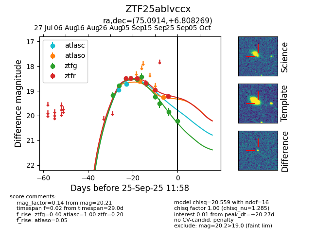
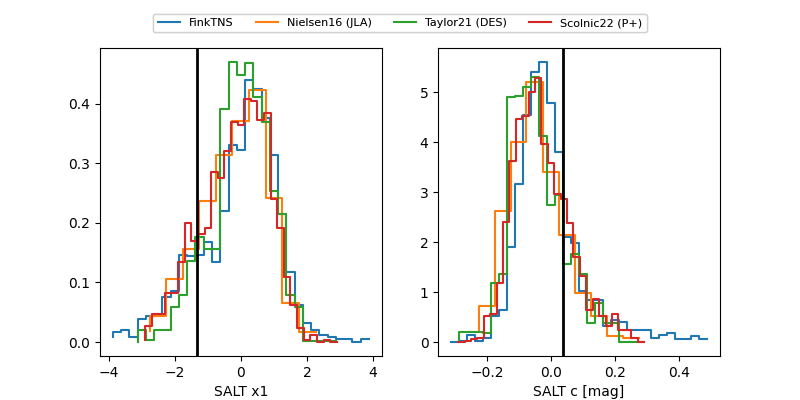

FINK: ZTF25ablvccx
Lasair: ZTF25ablvccx
ALeRCE: ZTF25ablvccx
ZTF25ablvccx (ztf,fink)
equatorial (ra, dec) = (75.0914,+6.80827)
galactic (l, b) = (193.1243,-20.95661)


last atlasc=18.72, atlaso=19.25, ztfg=20.21, ztfr=19.22
2 atlasc, 2 atlaso, 11 ztfg, 6 ztfr detections